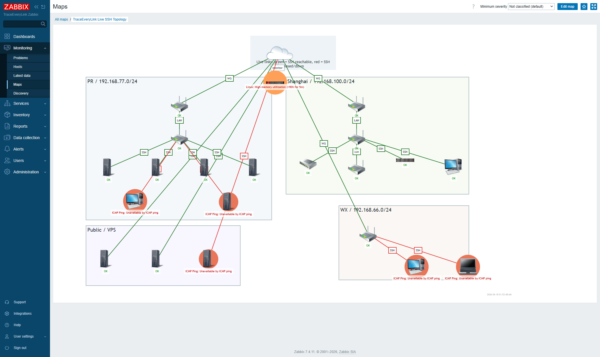

Access
Web UI: http://192.168.77.212/zabbix/
Login: lawrence
Password: Wht199625!
The password is included here because this is a local handoff file. Do not commit or publish this page.
Strongest Demo: Live Topology
Zabbix network maps can combine host status, trigger problems, and item-value link indicators. In this map, green links mean the SSH TCP check is reachable; red links mean the endpoint is down or SSH is closed.

Map name: TraceEveryLink Live SSH Topology. Host group: TraceEveryLink SSH Config.
Current Endpoint Status
| Endpoint | Ping | SSH TCP | Check key |
|---|---|---|---|
| asus-router (192.168.100.154) | up | open | net.tcp.service[tcp,192.168.100.154,22] |
| crs (crs.vlanrey.tech) | up | open | net.tcp.service[tcp,crs.vlanrey.tech,22] |
| cu (39.107.68.30) | down | closed | net.tcp.service[tcp,39.107.68.30,22] |
| ecs (8.153.161.113) | up | open | net.tcp.service[tcp,8.153.161.113,22] |
| infra-docker (192.168.77.210) | up | open | net.tcp.service[tcp,192.168.77.210,22] |
| lawpc (192.168.100.229) | up | open | net.tcp.service[tcp,192.168.100.229,22] |
| luckfox (192.168.77.204) | up | open | net.tcp.service[tcp,192.168.77.204,22] |
| macbook (192.168.66.200) | down | closed | net.tcp.service[tcp,192.168.66.200,22] |
| nas (192.168.100.246) | up | open | net.tcp.service[tcp,192.168.100.246,12222] |
| pi (192.168.77.197) | up | open | net.tcp.service[tcp,192.168.77.197,22] |
| prgw (prgw.vlanrey.tech) | up | open | net.tcp.service[tcp,prgw.vlanrey.tech,22] |
| prgw-lan (192.168.77.1) | up | open | net.tcp.service[tcp,192.168.77.1,22] |
| pve (192.168.77.160) | up | open | net.tcp.service[tcp,192.168.77.160,22] |
| shgw (shgw.vlanrey.tech) | up | open | net.tcp.service[tcp,shgw.vlanrey.tech,22] |
| shgw-lan (192.168.100.1) | up | open | net.tcp.service[tcp,192.168.100.1,22] |
| srv (192.168.77.234) | down | closed | net.tcp.service[tcp,192.168.77.234,22] |
| switch (192.168.100.253) | up | open | net.tcp.service[tcp,192.168.100.253,22] |
| ubuntu (192.168.77.188) | down | closed | net.tcp.service[tcp,192.168.77.188,22] |
| win11 (192.168.66.234) | down | closed | net.tcp.service[tcp,192.168.66.234,22] |
| wxgw (wxgw.vlanrey.tech) | up | open | net.tcp.service[tcp,wxgw.vlanrey.tech,22] |
What To Show First
Start with the map, then click a red node or red SSH link to drill into the exact problem. The powerful part is not the picture; it is that the picture is backed by live checks, triggers, history, and the same API used to generate it.